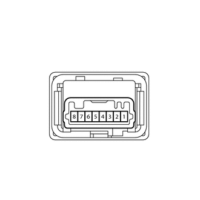

RM3140CG
_54
制动
_023990
制动控制/动态控制系统
_0116363
VSC OFF 开关
G
制动控制/动态控制系统 VSC OFF 开关 检查
程序

 1.检查 VSC OFF 开关
1.检查 VSC OFF 开关
a.

1.885,2.042 2.479,2.875
true
1.521,2.052 0.948,2.875
true
0.323,0.313 0.969,0.656
0.646,0.344
10
*a
2.427,2.885 2.885,3.146
0.458,0.26
10
E
0.854,2.885 1.333,3.25
0.479,0.365
10
+
| *a | 未连接线束的零部件
（VSC OFF 开关） |
确保连接器的锁止件和连接部件没有松动。
b.
断开 VSC OFF 开关连接器。
c.
检查连接器壳和端子是否变形和腐蚀。
- 正常:
无变形或腐蚀。
d.
根据下表中的值测量电阻。
- 标准电阻:
检测仪连接 条件 规定状态 6 (+) -3 (E) 按下开关 小于 1 Ω 6 (+) -3 (E) 未按下开关 10 kΩ 或更大
如果结果不符合规定，则更换 VSC OFF 开关。